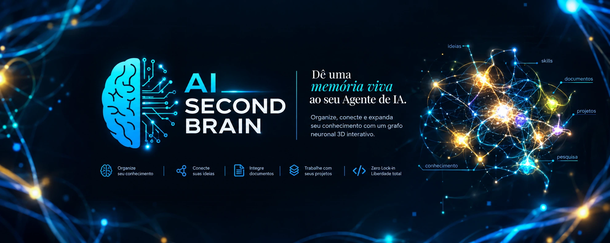

Todo desenvolvedor que trabalha com agentes de IA conhece a cena: você passa 40 minutos alinhando a arquitetura, fecha a janela, volta no dia seguinte e o agente pergunta de novo qual é a stack. Brilhante no raciocínio, mas com amnésia crônica entre conversas. Foi esse atrito que me levou a criar o AI Second Brain: memória persistente em Markdown que vira um grafo neural 3D vivo, lido pelo seu agente a cada sessão. Neste artigo percorro o projeto inteiro, do problema à arquitetura, do AI Gateway ao Research Lab.

01 · O PROBLEMATrês custos invisíveis do agente sem memória
Sem Segundo Cérebro
Com Segundo Cérebro
memory/current-state.md e decisions/GLOBAL_DECISIONS.md. O schema Prisma já foi migrado; falta o middleware JWT.”.agents/rules/03-security.md. Posso gerar?”Conversa e números de exemplo ilustrativo, da demonstração do projeto.
02 · A SOLUÇÃOUm cérebro vivo em quatro camadas
Zero banco vetorial opaco, zero infraestrutura cara: apenas arquivos Markdown organizados no Git, espelhando um grafo neural biológico.
00-core.md, 01-ai-decision.md, 03-security.md.
ai-decision-gate, new-feature, bug-investigation.
current-state.md, lessons-learned.md.
GLOBAL_DECISIONS.md, 001-stack-inicial.md.
03 · ARQUITETURATrês mecanismos que impedem o esquecimento
Hub & satélites. Um hub central guarda governança, regras e memória. Cada repositório satélite (API, app web, mobile) mantém seu código, CI/CD e Docker e se conecta ao cérebro sem duplicar arquivos, via junções NTFS ou symlinks de diretório.
Portão de decisão. Antes de gastar tokens, o RulesDecisionProvider (0 ms, custo zero) pergunta: a tarefa é determinística e sem ambiguidade semântica? Se sim, código ou regras resolvem. Só o restante vai para um modelo de IA.
Ciclo da sessão. Cada sessão começa lendo o estado atual, consulta regras e ADRs durante o trabalho e termina registrando as entregas. A próxima assume exatamente de onde esta parou.
04 · PERGUNTE AO CÉREBROBusca determinística, sem alucinar fontes
Com Ctrl+K, um motor RAG inspirado em BM25/TF-IDF recupera os trechos mais densos do cofre e a IA (sua chave) sintetiza a resposta com links clicáveis para os arquivos originais, seguindo a diretriz de Zero Fabricação. Os documentos de governança pesam mais no ranking:
Progressive Disclosure. Para evitar o efeito “Lost in the Middle”, a síntese prioriza de 5 a 7 documentos. Com um clique você expande até 12 fontes adicionais, inspeciona cada arquivo ou foca direto no grafo 3D.
05 · AI GATEWAYInteligência sem amarras (BYOK)
Um gateway único, configurável por projeto, com 7 provedores nativos e catálogo 100% dinâmico: ao conectar sua chave, a interface consulta a API oficial do provedor em tempo real e agrupa os modelos em três perfis. Nada de listas fixas que envelhecem em semanas.
Comece de graça, sem cartão. O Groq oferece tier gratuito com llama-3.3-70b-versatile (campeão de velocidade). O Google Gemini tem chave gratuita pelo AI Studio com gemini-2.5-flash (campeão de contexto). E o Ollama roda qwen2.5-coder ou llama3.2 localmente, com privacidade absoluta e custo zero.
06 · RESEARCH LABUm laboratório que pesquisa sozinho
Você descreve o tema, refina o prompt com IA (documento vivo, versionado em v1, v2…) e o motor gera duas camadas de arquivos:
RESEARCH/<tema>/knowledge/.
RESEARCH/<tema>/actionable/.
Feito para não quebrar: lê o tempo de espera informado pelo provedor e retenta sozinho em caso de rate limit; mantém cadência preventiva entre arquivos; retoma de onde parou sem gastar tokens refazendo; mostra progresso em tempo real (SSE) e faz fallback entre modelos com retentativas exponenciais. O motor local JEV detecta ambiguidades com chips de 1 clique e botão Desfazer.
07 · QUICKSTARTInstale em 2 minutos, conecte um projeto em menos de 3
Requisitos: Node.js 18+ e Git. Docker não é obrigatório.
git init automático, ou vincular um repositório local sem duplicar arquivos. Modo Express (50 ms) ou Sabatina Grill (IA).
08 · CONFIANÇAGovernança, segurança e zero lock-in
.env e credenciais, e nada é gravado sem a sua aprovação.
projects/<nome>/.
projects/<nome>/BACKUPS/.
git pull atualiza regras, skills e notas.
Desenvolver com agentes sem memória persistente é como contratar um engenheiro sênior novo a cada manhã e passar metade do dia ensinando a mesma arquitetura.
09 · COMPATIBILIDADE & LICENÇACompatível com o seu agente. Transparente na licença.
O sistema adota o padrão aberto AGENTS.md e gera pontes nativas no seu repositório: .cursorrules, CLAUDE.md, GEMINI.md, .windsurfrules, .clinerules e copilot-instructions.md. Assim a governança continua ativa em qualquer editor.
O AI Second Brain é distribuído sob a licença FSL-1.1-MIT (Functional Source License, modelo source-available / fair-code). É livre e gratuito para uso pessoal, pesquisa, estudo e uso produtivo interno. Para uso comercial concorrente ou parcerias, consulte o LICENSE e o CLA no repositório.